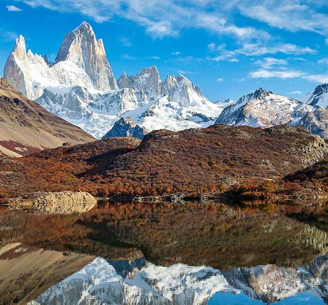
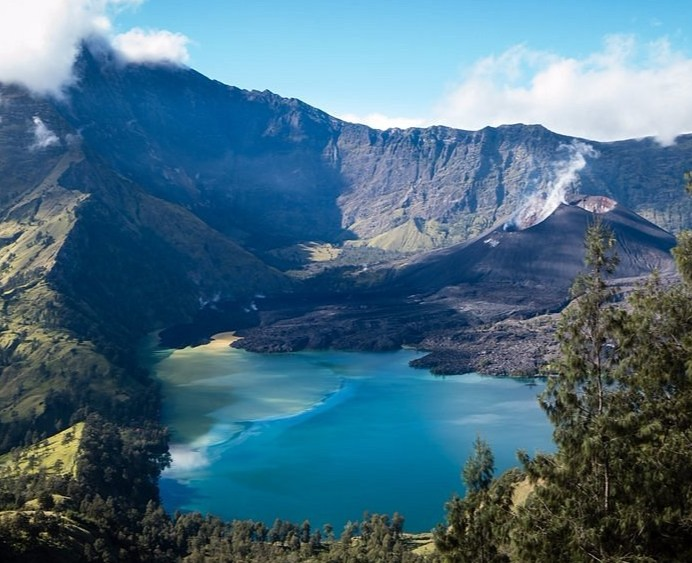

TOURS
Viajes, exploración y aventura

Laguna Capri
- Duración: Caminata de 4-5 horas (ida) hacia la Laguna Capri con vistas al Monte Fitz Roy.
- Dificultad: Sendero fácil, sin grandes ascensos, ideal para principiantes.
- Atractivo: Paisajes espectaculares con bosques, riachuelos y vistas majestuosas de las montañas.

Cráter del Monte Rinjani
- Duración: Trekking de 2 a 3 días hasta el cráter del volcán Rinjani.
- Dificultad: Nivel intermedio, con ascensos pronunciados y descensos empinados.
- Atractivo: Vistas al lago Segara Anak, clima tropical y biodiversidad única en un paisaje volcánico impactante.

Ruta del Cares
- Duración: Ruta de 24 kilómetros (ida y vuelta) entre Caín y Poncebos.
- Dificultad: Nivel difícil, por la longitud y el terreno irregular.
- Atractivo: Desfiladero impresionante con vistas a acantilados, ríos cristalinos y paisajes de montaña únicos.